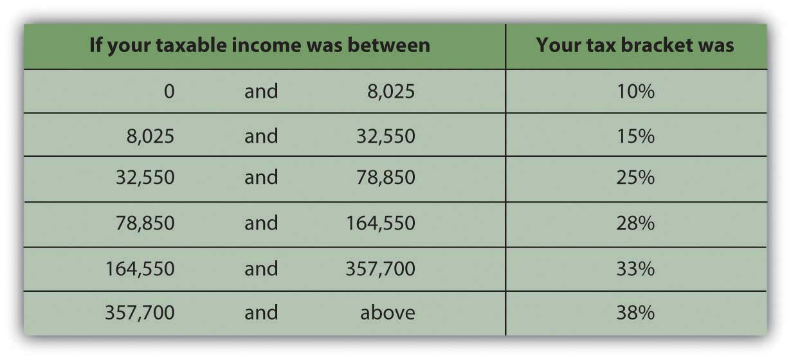
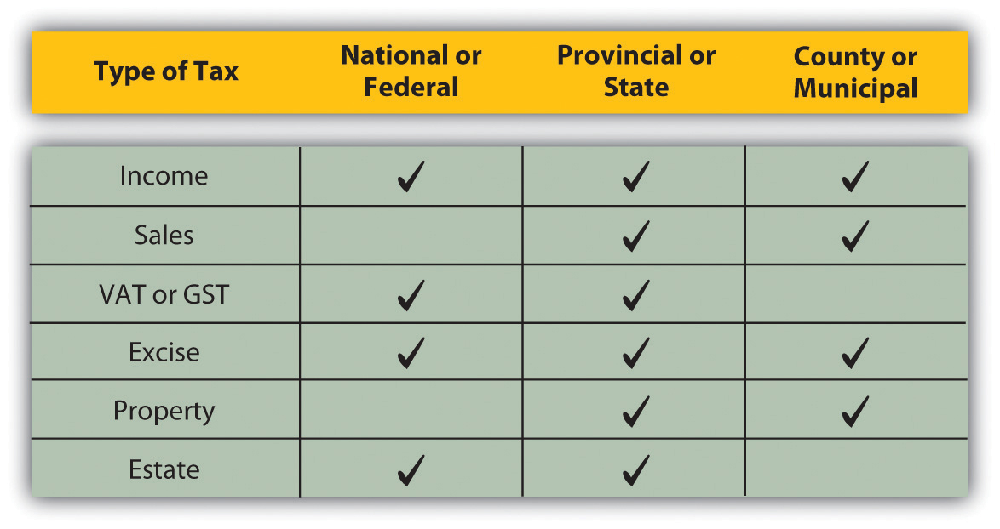

Any government that needs to raise revenue and has the legal authority to do so may tax. Tax jurisdictions reflect government authorities. In the United States, federal, state, and municipal governments impose taxes. Similarly, in many countries there are national, provincial or state, county, and municipal taxes. Regional economic alliances, such as the European Union, may also levy taxes.
Jurisdictions may overlap. For example, in the United States, federal, state, and local governments may tax income, which becomes complicated for those earning income in more than one state, or living in one state and working in another. Governments tax income because it is a way to tax broadly based on the ability to pay. Most adults have an income from some source, even if it is a government distribution. Those with higher incomes should be able to pay more taxes, and in theory should be willing to do so, for they have been more successful in or have benefited more from the economy that the government protects.
Income tax is usually a progressive taxA tax rate that increases as the amount to be taxed increases, a common design of an income tax.: the higher the income or the more to be taxed, the greater the tax rate. The percentage of income that is paid in tax increases as income rises. Those income categories are called tax bracketsA range of income that defines an income tax rate. (Figure 6.2 "U.S. Income Tax Brackets in 2008 (Single Filing Status)").
Figure 6.2 U.S. Income Tax Brackets in 2008 (Single Filing Status)
Tax is levied on income from many sources:
A sales tax or consumption taxA sales or excise tax that taxes the consumption of discretionary and nondiscretionary goods and services. taxes the consumption financed by income. In the United States, sales taxes are imposed by state or local governments; as yet, there is no national sales tax. Sales taxes are said to be more efficient and fair in that consumption reflects income (income determines ability to consume and therefore level of consumption). Consumption also is hard to hide, making sales tax a good way to collect taxes based on the ability to pay. Consumption taxes typically tax all consumption, including nondiscretionary items such as food, clothing, and housing. Opponents of sales tax argue that it is a regressive taxA tax rate that decreases as the amount to be taxed increases., because those with lower incomes must use a higher percentage of their incomes on nondiscretionary purchases than higher-income people do.
The value-added taxA consumption tax that spreads the tax burden among producers and consumers by taxing the value added to goods at each stage of production and consumption. (VAT) or goods and services tax (GST) is widely used outside the United States. It is a consumption tax, but differs from the sales tax, which is paid only by the consumer as an end user. With a VAT or GST, the value added to the product is taxed at each stage of production. Governments use a VAT or GST instead of a sales tax to spread the tax burden among producers and consumers, and thus to reduce incentive to evade the tax. A consumption tax, like the sales tax, it is a regressive tax. When traveling abroad, you should be aware that a VAT may add substantially to the cost of a purchase (a meal, accommodations, etc.).
Excise taxesA tax on a specific item produced within a country. are taxes on specific consumption items such as alcohol, cigarettes, motor vehicles, fuel, or highway use. In some states, excise taxes are justified by the discretionary nature of the purchases and may be criticized as exercises in social engineering (i.e., using the tax code to dictate social behaviors). For example, people addicted to nicotine or alcohol tend to purchase cigarettes or liquor even if an excise tax increases their cost—and are therefore a reliable source of tax revenue.
Property taxes are used by more local—state, municipal, provincial, and county—governments, and are most commonly imposed on real property (land and buildings) but also on personal assets such as vehicles and boats. Property values theoretically reflect wealth (accrued income) and thus ability to pay taxes. Property values are also a matter of public record (real property is deeded, boats or automobiles are licensed), which allows more efficient tax collection.
Estate taxesA tax on the intergenerational transfer of wealth after death. are taxes on the transfer of wealth from the deceased to the living. Estate taxes are usually imposed on the very wealthiest based on their unusual ability to pay. Because death and the subsequent dispersal of property is legally a matter of public record, estate taxes are generally easy to collect. Estate taxes are controversial because they can be seen as a tax on the very idea of ownership and on incomes that have already been taxed and saved or stored as wealth and properties. Still, estate taxes are a substantial source of revenue for the governments that use them, and so they remain.
A summary of the kinds of taxes used by the three different jurisdictions is shown in Figure 6.3 "Taxes and Jurisdictions".
Figure 6.3 Taxes and Jurisdictions
Taxes may be imposed on the following:
Incomes from
Wealth from
Taxes may be
Match the description to the type of tax. (Write the number of the tax type before its description.)
Description:
Type of Tax: